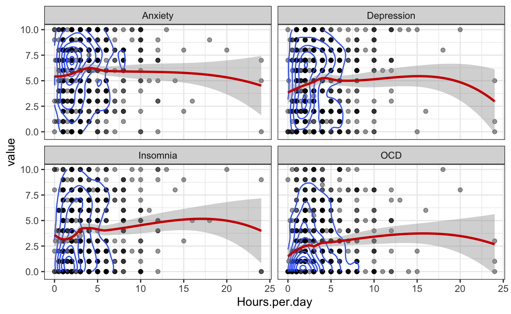
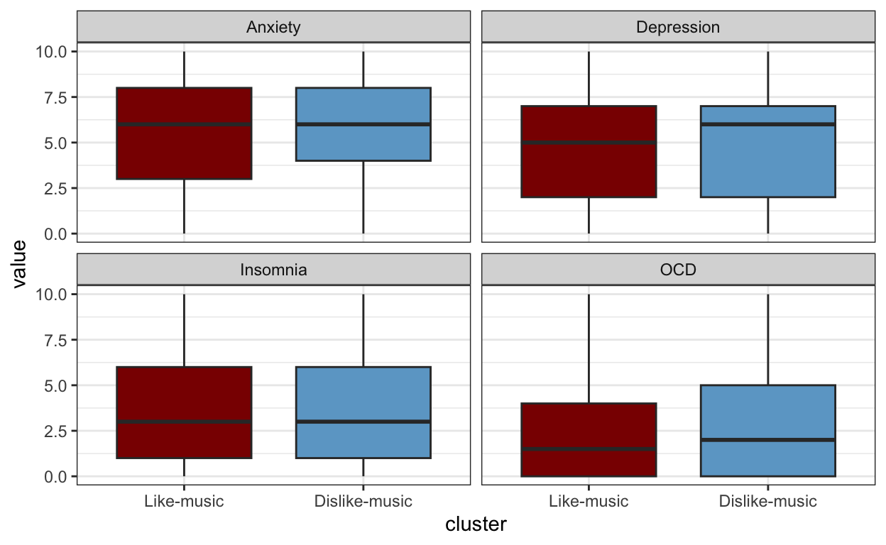

Virtual Art Exhibit
Introduction
Data visualization is an important part in data analysis, which provide a big picture to provide the relationship between predictors in a direct way. Thus in this report, some data visualization methods are used to describe and investigate the relationship between music and mental health. In this report, the visualization methods are used to reveal whether the music would affect the mental health. Furthermore, if these is a significant relationship existed between music and mental health, it would be investigated which kind of music would affect the mental state mostly.
1. Data description
First note that the dataset comes from the `https://www.kaggle.com/datasets/ catherinerasgaitis/mxmh-survey-results/code
The data set includes 746 rows and 33 columns. The variables existed in the data set can be divided into 3 parts. The first one is the state of observations such as age and the viewing time. The second part is the habits of listening music of these observations including the time of listening music and favor of these music. The third part is the mental state of these observations including anxiety, depression, OCD and others. The variables Timestamp, age, Permissions and Primary.streaming.service are removed due to they are not related with the relationship between music and mental health.
2. How to describe the mental health? <Interactive Alert!>
As shown in the correlation matrix plot, it is found that these indicators of mental health are correlated with each other. You could put your mouse on the blocks of the correlation plot so that you can get the value of the block corresponding to two specific mental health measure. Also note that, if needed, these indicators can be combined into one indicator to describe the comprehensive mental health state such as the sum or average of the four indicators.
3. whether music is effective subjectivity?

As shown in the pie plot, most of observations believe that the music would develop the mental health subjectivity. However, whether the music would make the mental health better exactly or it is just a illusion? The following investigation would use the objective indicator such as anxiety, depression insomnia and OCD. In fact, according to the box plots, the observations who believe the music makes mental health better would not exactly feel better for anxiety and OCD. It also shows that the judgement from objective indicators is really important.
4. Whether the daily time spent on music would affect mental health?

The scatter plots and smooth curve are used to describe the relationship between daily time spent on music and these mental health indicator. Due to value of these indicators are close, the scatters are almost overlap. To avoid the overlap and get more information, 2D density curves are also constructed. As a result, it is found that there is not enough evidences to support the relationship between daily time spent on music and mental health. Thus long time spent on listening music would not develop the mental health.
5. Whether working with music would develop mental health?

According to the density plot, whether the observations work with music would not affect the mental health due to the density curve are almost overlapped. Thus working with music seems not to be a good idea to relax the mental state.
6. The profile of favors on music for these observations
The number of types of music are too large, which makes the investigation towards relationship between favor of music and mental health becomes too complex. Thus, in this section, the favor of music for these observations are scaled into 1-4, in which Never represented by 1, Rarely represented by 2, Sometimes represented by 3 and Very frequently represented by 4. As shown in the figure, the observations can be clustered into 2 groups due to the silhouette is largest while number of cluster is 2.
To reduce the dimensions of the data, principle component analysis (PCA) is performed. The result of clustering is visualized on the 2D space derived from PCA. As a biplot shown, the first cluster often listen to the music (noted as pink circles), of which the score (1-4) for almost kinds of music are high whereas the score for almost kinds of music are lower for the second cluster (noted as blue triangles). Thus according to the favor of music, these observation can be divided into two cluster as like-music and dislike-music because based on the dimension on y-axis, cluster2 has low values on all original variables(mark as blue) and cluster 1(mark as red) has high values on all original variables.
7. Whether the cluster based on music favor would affect mental health?
Based on the result from part 6, the box plots are used to visualize the relationship between whether like music and mental health. Unfortunately, there is not enough evidences supporting the favor of music would affect the mental health. It is also revealed that although the 1st and 3rd of depression score are not distinct between observations like and dislike music, the median of depression for observation like music is lower than the observations dislike music. It indicates that the music may relief the depression experience.
8. Which kind of genre of music affect mental health mostly?

As shown above, the average score of Latin music is almost the lowest for all of anxiety, depression and OCD, which indicates that the observations prefer Latin music would have less experiences of anxiety, depression and OCD. Besides, average score of OCD for Gospel music is lower than others obviously, which shows that listening to the Gospel music may be a good way to relief the OCD.
Conclusion
In this report, the visualization methods are used to reveal which aspect of listening music would affect the mental health. As a result, although most of people believe music would develop their mental health state, there are not enough objective evidences supporting the music would develop the mental health. However, there are also interesting things are revealed such as the potential value of listening to music on relief depression, the potential value of Gospel music on relief OCD and the Latin music may develop the mental health state.
The most limitation of this investigate is lacking a model to describe the correlation between mental health and music. Although visualization methods are the direct way to reveal the relationship between mental health and music, but there are too much variables existed, which makes the conditional plots are hard to be constructed. The marginal relationship visualized in this report may be misleaded or biased.